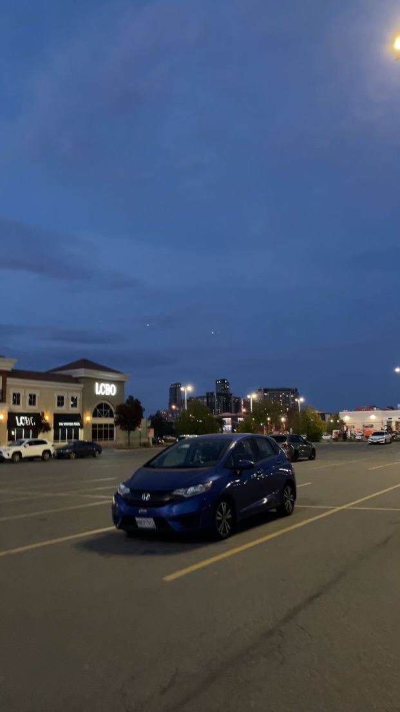
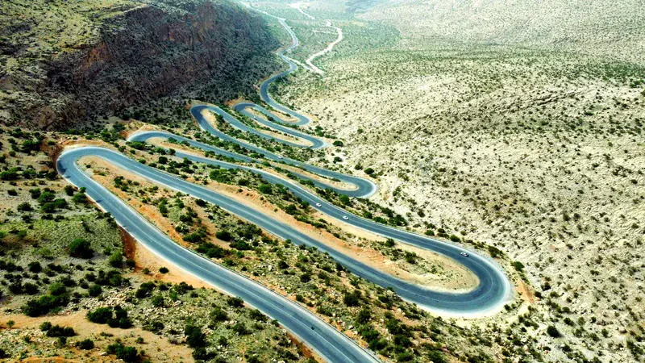
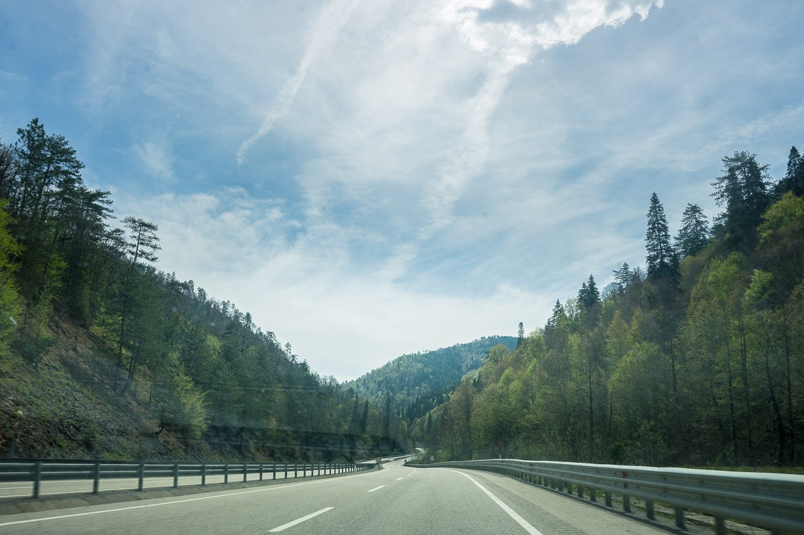
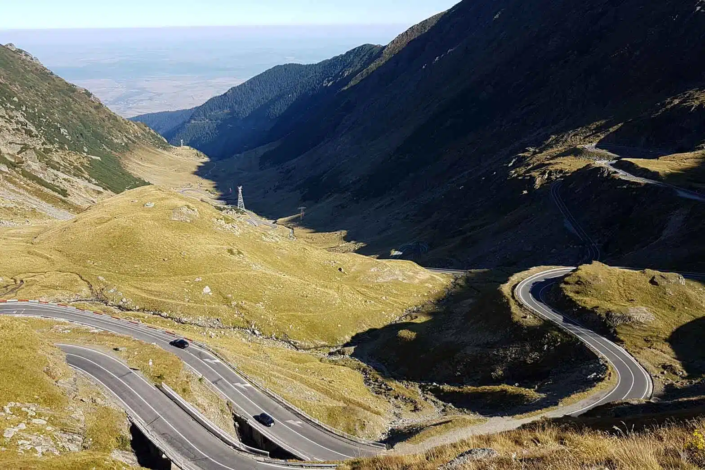
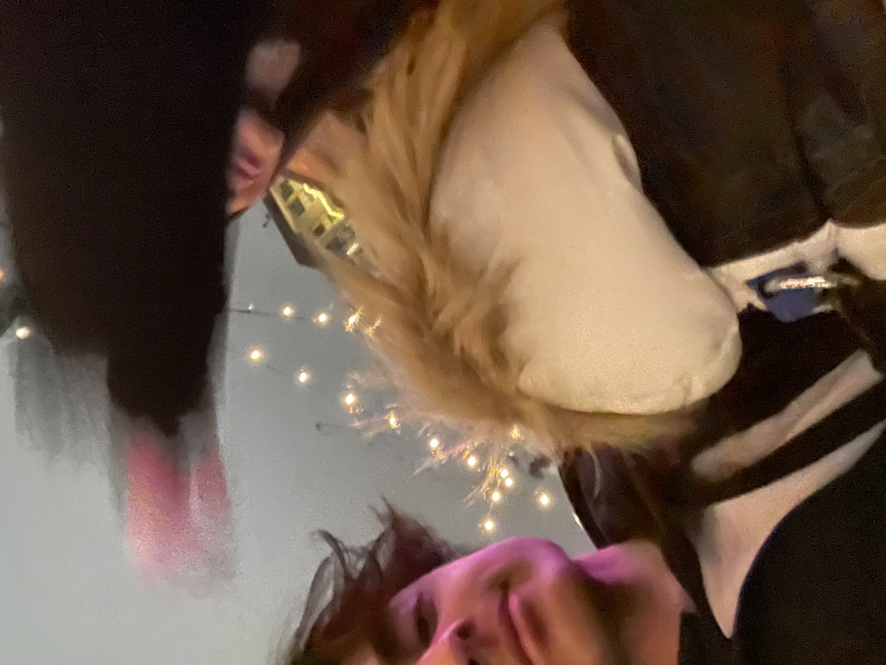

About Dory
Dory is the untouchable princess of all cars! This website is dedicated to sharing her amazing adventures with her parents, Madame Esra, and Sir Aryana. Sporting a sleek dark blue exterior and a personality as vibrant as the ocean she’s named after, Dory is not just any car—she's a symbol of elegance and adventure.
From the moment she graced our driveway, Dory has been the heart and soul of countless road trips and spontaneous drives. Her smooth handling and impeccable performance make every journey a delight, whether we're cruising through city streets or winding mountain roads.
Adventures
Here are some of the exciting places Dory intends to visit:
-
Shiraz, Iran
 -
Ankara, Turkiye
 -
Berlin, Germany

Us.
My favourite picture of us.

Donovan and Limu were so young when they left us...

I always somehow end up smiling when I'm with you.
YOU SKIPPED THE ROCK!!!
Moments before I witnessed your Turkish fury for the first time.
YOUR FIRST TIME MEETING THE RICKSTER!
My favourite picture of you.

My favourite day with you.
I cherish all these memories we've made, which is why I have something to ask...